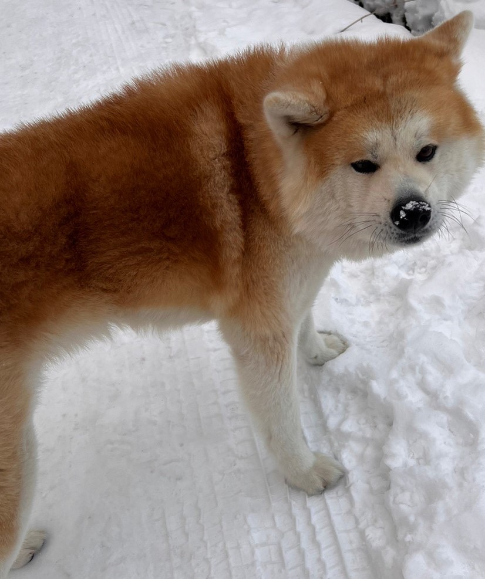
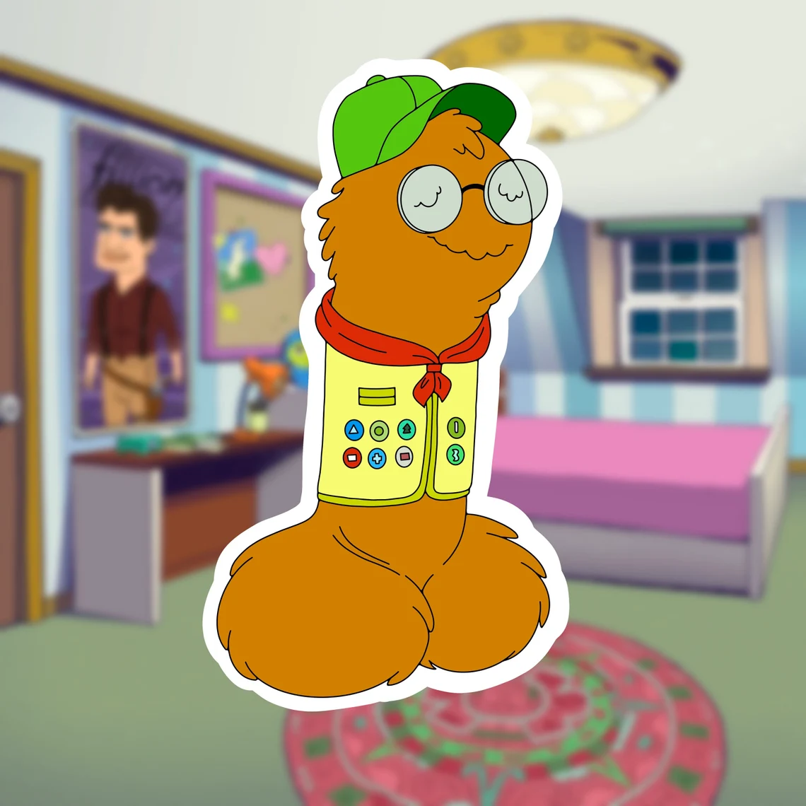

-
Tetoh
He is like fox and cat mix.he is prakster and cheerful.he likes exploring.
-
Sunchan
she is a daugther of Sun.She is lazy and Fraidy-cat.She likes sleeping.
-

Ponta
He is from Akita city.he is friendly and smart.he likes running around.
-
Mattdog
He is like human and dog mix.he is from Australia.He is honest and kind.he likes doing somethting
-
Wally
He is like human and pomeranian mix.he is goofy and funny.he likes singing a song.
-
Monster
He is a hat of mattdog.he is short temper and Grumpy.He likes going outside.
-
Yuu
She is like human and chihuahua mix.She is mattdog addicted.She likes traveling.
-
Puuchan
She is with yuu.she change the condition easiry and sensitive.she likes aggressive.
-

Piichan
He is with mattdog.he has several houses(mattdog underwear).he likes dancing.
-

Sunchan Tetoh
They are always together.They are full of curiosity.They like doing new things.